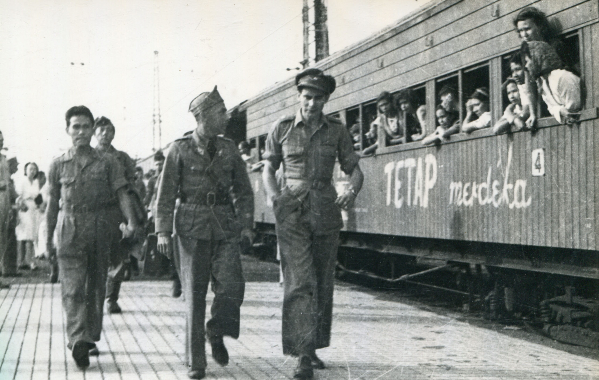
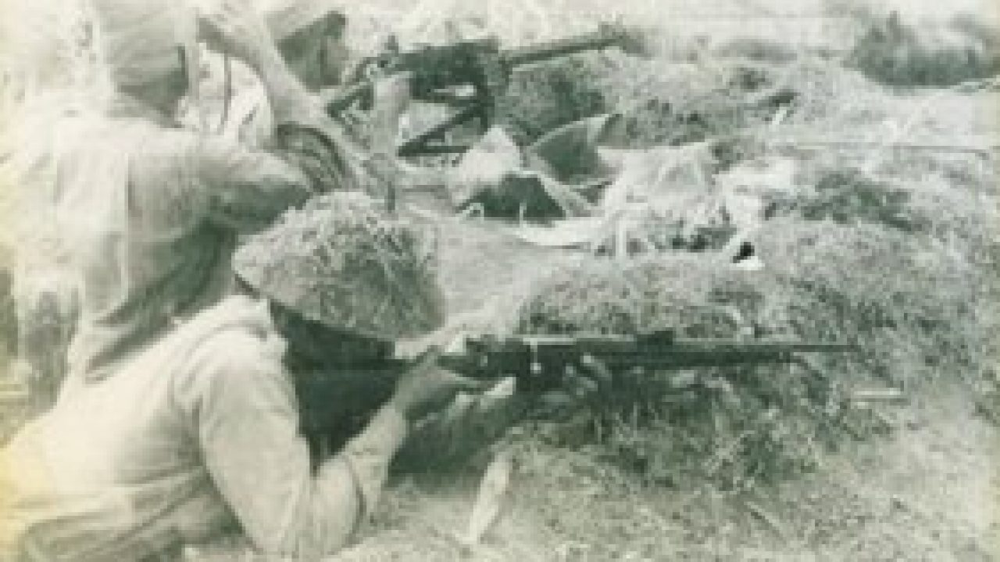
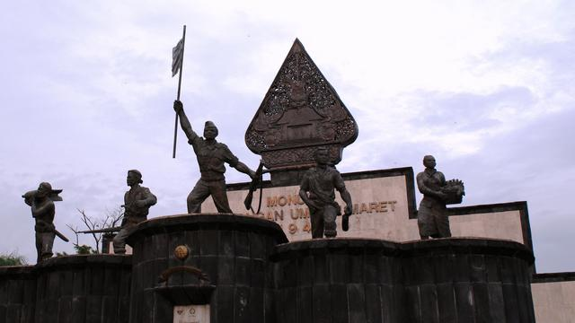

 NICA di Indonesia (kompas.id)
Setelah Jepang dikalahkan, Komando Sekutu Asia Tenggara di Singapura mengirim 7 perwira ke Indonesia untuk mempelajari dan melaporkan situasi di Indonesia. Mereka sampai di Indonesia pada 8 September 1945. Pada 16 September 1945, rombongan Sekutu yang dipimpin Laksamana Muda Patterson mendarat di Tanjung Priok (Jakarta). Rombongan ini diikuti Van der Plas yang mewakili kepala NICA, yaitu Dr. van Mook.NICA (Netherland Indies Civil Administration) adalah pemerintahan sipil Hindia-Belanda. Sekutu juga membentuk komando khusus untuk mengurus Indonesia, yaitu Allied Forces Netherlands East Indies (AFNEI). AFNEI sampai di Jakarta pada 29 September 1945 dan hanya bertugas di Jawa dan Sumatera.
Kedatangan Sekutu awalnya disambut baik oleh rakyat Indonesia. Tetapi ini menjadi kecurigaan ketika disertai NICA karena rakyat tahu NICA berniat menguasai Indonesia. Situasi semakin memburuk ketika NICA mempersenjatai KNIL. Dengan dukungan Inggris, pecahlah berbagai pertempuran di Indonesia.
Perjanjian Linggarjati (25 Mar 1947)
Perjanjian Linggarjati terjadi ketika Inggris menyadari bahwa sengketa Belanda-Indonesia tidak mungkin diselesaikan dengan senjata. Perundingan pertama gagal, tetapi perundingan kedua (RI diwakili Sutan Syahrir) pada 7 Oktober 1946 menghasilkan persetujuan gencatan senjata antara ketiga pihak dan membentuk Komisi Bersama Gencatan Senjata.

Perjanjian Linggarjati (mediahukumindonesia.com)
- Belanda mengakui wilayah kekuasaan RI, yaitu Jawa, Sumatera, dan Madura.
- RI dan Belanda bekerja sama membentuk RIS.
- RIS dan Belanda akan membentuk Uni Indonesia-Belanda.
Hasil persetujuan Linggarjati ditandai pada 25 Maret 1947. Setelah Belanda mengakui kedaulatan Indonesia, negara-negara lain mulai mengikuti sedemikian dan memperkuat kedudukan Indonesia di dunia internasional.
Di dalam negeri, hasil perjanjian ini ada yang disikapi pro karena gencatan senjata dan konsolidasi pasukan yang terpencar; dan juga ada yang kontra karena wilayah Indonesia semakin kecil. Ini mengakibatkan kejatuhan kabinet Syahrir dan Soekarno menugaskan Amir Syarifuddin membentuk kabinet baru.
2. Perang Gerilya Melawan Agresi Militer
Rakyat Indonesia tidak sepenuhnya mempercayai perjanjian tersebut sebab daerah-daerah yang dikosongkan Inggris diganti oleh tentara Belanda. Oleh karena itu, Panglima Sudirman dan Jenderal Oerip Soemohardjo menginstruksikan tentara Republik untuk mempertahankan kubu-kubu di sekitar Belanda. Mereka mengoptimalkan perang gerilya, yaitu perang yang tidak terikat secara resmi pada ketentuan perang.
Dugaan mereka benar. Pada 21 Juli 1947, agresi militer belanda I terjadi. Dan pada akhir tahun tersebut, tentara republik mulai terorganisir dan memiliki komando gerilya yang dinamis.
Ketika agresi militer belanda kedua terjadi, Jenderal Sudirman memerintahkan tentara republik ke luar kota untuk bergerilya kembali. Meskipun pada saat itu beliau dalam keadaan sakit berat, Jenderal Sudirman berhasil memimpin gerilya di berbagai daerah. Karena penyakit TBC yang semakin parah, beliau terpaksa harus ditandu.
Perang-perang gerilya yang semakin tajam mendesakkan Belanda dan dunia internasional semakin gencar mengancam Belanda sehingga Belanda bersedia berunding dengan Indonesia.

Gerilya rakyat (hukamnas.com)
Agresi militer ini mengundang reaksi dunia. India dan Australia membawa pembicaraan tentang masalah Indonesia sebagai anggota Dewan Keamanan PBB. Pada 1 Agustus 1947, PBB memerintahkan penghentian tembak-tembakan. 3 hari kemudian, gencatan senjata terjadi kepada Indonesia dan Belanda yang diawasi oleh Komisi Konsuler.
3. Agresi Militer Belanda ke Republik Indonesia
a. Agresi Militer I Belanda
Meskipun begitu, Belanda masih berupaya untuk memperluas wilayahnya. Hal ini dilaporkan kepada PBB sehingga terbentuknya KTN (Komisi Tiga Negara). KTN terdiri atas 3 negara: Australia yang mewakili kepentingan Indonesia, Belgia yang mewakili kepentingan Belanda, dan AS sebagai pihak netral. KTN tiba di Jakarta pada 27 Oktober 1947 dan mereka berhasil melakukan pendekatan antara pihak-pihak yang bertikai, bahkan Perjanjian Renville dapat terjadi.
Perjanjian Renville (17 Jan 1948)
Atas usul KTN, RI-Belanda sepakat untuk berunding di atas kapal USS Renville di Jakarta pada 8 Desember 1947. Delegasi RI adalah Amir Syarifuddin. Pada 17 Januari 1948, Perjanjian Renville ditandatangani kedua pihak dengan isi:
- Disetujui melakukan gencatan senjata.
- Disetujui sebuah garis batasan yang memisahkan RI dan Belanda.
- TNI harus ditarik dari daerah-daerah Jawa Barat dan Timur ke daerah RI di Yogyakarta.
b. Agresi Militer II Belanda
Pada 19 Desember 1948, agresi militer Belanda kedua terjadi di bawah pimpinan Dr. Bell dengan pasukan lintas udara mereka. Sasaran pertama mereka adalah Maguwo. Kemudian, mereka beralih ke Yogyakarta. Dalam serangan itu, Belanda berhasil menawan Presiden, Wakil Presiden, dan pejabat tinggi lainnya. Soekarno dan Hatta dua-duanya ditawan di Bangka.
Setelah itu, Belanda menyiarkan berita ke seluruh dunia bahwa RI sudah tidak ada lagi dan TNI sama sekali tidak berarti dengan tujuan menyudutkan kedudukan RI di dunia internasional. Namun, sebelum Soekarno ditawan, beliau sempat memimpin sidang kabinet yang menghasilkan tiga hal:
- Menteri Kemakmuran Mr. Syafruddin Prawiranegara hendak membentuk Pemerintahan Darurat republik Indonesia di Sumatera.
- Presiden dan wakil presiden tinggal dalam kota agar dekat dengan KTN dengan risiko tawanan Belanda.
- Pimpinan TNI menyingkir ke luar kota untuk melaksanakan gerilya dengan membentuk komando di Jawa dan Sumatra.
Sebulan setelah agresi militer II Belanda, tentara republik berhasil membenahi pasukan di berbagai sektor pertempuran. Mereka mulai menyerang garis komunikasi Belanda, seperti merusak jalan kereta api dan menyerang konvoi-konvoi Belanda. Para lurah juga membantu mereka dengan menyesatkan pihak Belanda.
Sejak itu, Belanda terpaksa memperbanyak pos-pos mereka di luar kota dan kekuatan mereka terpencar. Kemudian, tentara republik mulai menyerang kota-kota. Puncak serangan TNI terjadi pada 1 Maret 1949 yang dikenal sebagai Serangan Umum.
Inisiatif serangan ini berasal dari Sri Sultan Hamengkubuwono IX yang mendengar bahwa PBB akan membicarakan masalah Indonesia pada Maret 1949. Ia berpendapat bahwa RI perlu membuat kejutan untuk membuka pandangan dunia terhadap perjuangan Indonesia. Sebab itu, Sri Sultan berhubungan dengan Komandan brigade, Letkol. Soeharto atas usulan Panglima Soedirman.
Sri Sultan dan Letkol. Soeharto menyusun rencana serangan umum atas Belanda di Yogyakarta yang dipimpin Kolonel van Langen. Wilayah yang akan diserang dibagi dalam lima sektor. Serangan terjadi pada pukul 06.00 dan berjalan dengan sangat sukses. Selama 6 jam, Yogyakarta dikuasai tentara republik. Ketika bala bantuan Belanda tiba, pasukan republik sudah tidak ada. Keesokan harinya, peristiwa Serangan Umum 1 Maret 1949 disiarkan Sumardi ke pemerintahan PDRI. Berita itu kemudian disampaikan kepada A.A. Maramis (diplomat di India) dan L.N. Palar (diplomat di AS). Tak lama kemudian, peristiwa ini pun diketahui seluruh dunia.
 Monumen Serangan Umum 1 Maret (wikipedia.org)
Agresi militer Belanda kali ini melanggar perjanjian Belanda dan tidak didukung oleh Dewan Keamanan PBB. PBB mengadakan konferensi yang dihadiri sejumlah negara dari berbagai benua di New Delhi pada 20-23 Januari 1949. Dalam pertemuan pada 28 Januari 1949, PBB mengeluarkan resolusi, yakni:
- Penghentian semua operasi militer Belanda dan aktivitas gerilya.
- Pembebasan semua tahanan politik RI oleh Belanda.
- Belanda harus mengembalikan para pemimpin RI ke Yogyakarta.
- Perundingan-perundingan baru akan diawasi PBB.
- KTN diubah namanya menjadi United Nations Commision for Indonesia (UNCI), dimana salah satu tugasnya adalah untuk mengurus pengembalian kekuasaan pemerintahan RI.
Akhirnya, Indonesia dan Belanda pun melakukan perundingan di bawah Merle Cochran dari AS. Delegasi Indonesia ialah Mr. Moh. Roem, dan Belanda, Dr. van Royen.
Perundingan Roem-Royen (7 Mei 1949) Tujuan utama dari perundingan ini adalah agar kedua pihak menghentikan semua aktivitas militernya. Perundingan pertama diadakan pada 17 April dan berlarut-larut hingga 7 Mei 1949. Isi pokok persetujuan Roem-Royen adalah:
- Indonesia dan Belanda akan menghentikan segala aktifitas militer demi kedamaian dan ketertiban
- Belanda akan mengembalikkan pemerintahan RI ke Yogyakarta dan membebaskan semua tahanan politik, serta tidak berusaha untuk memperluas wilayah mereka
- Belanda menyetujui adanya RI dalam Negara Indonesia Serikat (NIS)
- Kedua pihak akan sungguh-sungguh ikut-serta dalam KMB di Den Haag
Konferensi Inter-Indonesia antara wakil-wakil kedua pihak terjadi pada 19-22 Juli 1949 di Yogya dan 31 Juli – 2 Agustus 1949 di Jakarta. Keputusannya adalah sebagai berikut:
- BFO mengakui bahwa NIS akan menerima kedaulatan dari Belanda dan RI.
- Pembentukan Komite Persiapan Nasional yang terdiri atas RI dan BFO sebagai pusat hubungan RI dan BFO serta mengkoordinasikan seluruh kegiatan selama dan sesudah KMB
- Negara bagian tidak akan memiliki tentara terpisah-pisah
- BFO mendukung RI dalam penyerahan kedaulatan menjadi nyata tanpa syarat dan tanpa ikatan apapun
KMB berlangsung pada 23 Agustus – 2 November 1949 di Den Haag, Belanda dan dipimpin oleh PM Belanda, Dr. Willem Drees. Delegasi Indonesia diketuai Moh. Hatta, BFO diketuai Sultan Hamid II, dan Belanda diketuai Mr. van Maarseven. UNCI diwakili Chritchley. KMB berlangsung lama karena dua masalah yang susah dipecah, yaitu masalah uni Indonesia Belanda dan soal utang Hindia-Belanda.
 Konferensi Meja Bundar di Den Haag (tribunnewswiki.com)
Konferensi Meja Bundar di Den Haag (tribunnewswiki.com)
- Belanda akan mengakui kedaulatan RIS pada akhir Desember 1949.
- Status Irian Barat akan ditunda setahun sesudah pengakuan kedaulatan.
- Dibentuk Uni Indonesia-Belanda berdasarkan kerjasama sukarela dan sederajat.
- RIS harus membayar semua utang Belanda sejak 1942.
- Pasukan Belanda akan dipulangkan. KNIL dibubarkan dan bekasnya bisa menjadi anggota Angkatan Perang Republik Indonesia Serikat (APRIS).
5. Penandatangan Kedaulatan RIS Pada 27 November 1949 dilakukan upacara penandatangan naskah pengakuan kedaulatan RIS di Indonesia dan Belanda pada waktu yang sama. Di Istana Kerajaan Belanda, Ratu Juliana, PM Dr. Willem, dan Moh. Hatta bersama-sama membubuhkan tanda tangannya pada naskah. Sementara di Indonesia, Sri Sultan Hamengkubuwono IX dan Wakil Tinggi Mahkota Belanda, A.H.J Lovink, bertindak pula.
Peristiwa ini merupakan garis akhir bagi perjuangan bersenjata dan diplomasi bangsa Indonesia untuk menegakkan kemerdekaan.